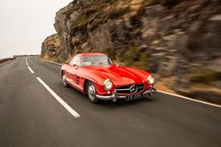
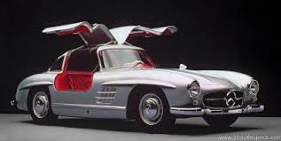
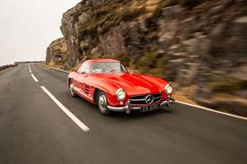
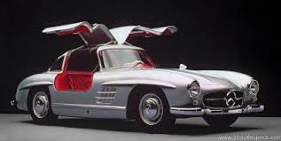

The Mercedes-Benz 300 SL (chassis code W 198) is a two-seat sports car that was produced by Mercedes-Benz from 1954 to 1957 as a gullwinged coupé and from 1957 to 1963 as a roadster. The 300 SL traces its origins to the company's 1952 racing car, the W194, and was equipped with a mechanical direct fuel injection system that significantly increased the power output of its three-liter overhead camshaft straight-six engine. The 300 SL was capable of reaching speeds of up to 260 km/h (162 mph), earning it a reputation as a sports car racing champion and making it the fastest production car of its time. The car's iconic gullwing doors and innovative lightweight tubular-frame construction contributed to its status as a groundbreaking and highly influential automobile. The designation "SL" is an abbreviation of the German term super-leicht, meaning "super-light", a reference to the car's racing-bred lightweight construction. The 300 SL was introduced to the American market at the suggestion of Max Hoffman, Maximilian Hoffman, Mercedes-Benz's United States importer at the time, who recognized the potential demand for a high-performance sports car among American buyers. The Mercedes-Benz 300 SL remains a highly sought-after classic car and is celebrated for its performance, design, and technological advancements.